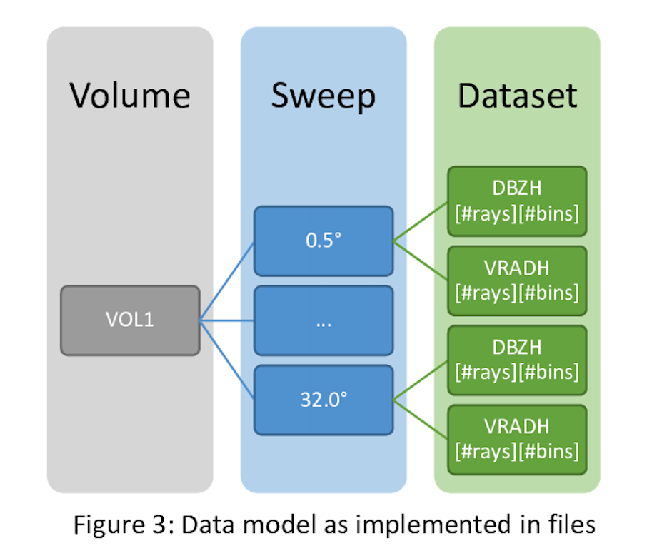

ERAD Takeaways#
This week, I attended the 11th European Conference on Radar in Meteorology and Hydrology in Locarno, Switzerland! This conference brought a large community of weather forecast agencies (hosted by Meteoswiss, the Swiss weather service), researchers, software developers, vendors, and other members of the private sector.
The conference consisted of two main parts:
“The Academy” which were day long short courses
Open Radar Software
PySteps - a tool focused around nowcasting (short term weather forecasting on the order of hours)
Using polarimetric weather radar data
The conference
~12 minute conference-style talks
Triplets where three people presented together on a similar topic
Lectures presented by well-respected members of the field
The Workshop#
The Pre-Workshop Meeting#
I helped teach/setup the infrastructure for the Open Radar Software workshop. We arrived two days before the short course started since we setup our first joint-Open Radar Software developers meeting on Saturday. Meteoswiss kindly hosted this meeting, where we discussed the logistics for the workshop and highlighted next steps forward for our community.
One of the key opportunities for collaboration discussed during this meeting (and will be a priority moving forward) is a new package focused solely on a new data model for radar data in Python. We will build the necessary tools to load radar data into the Pangeo-friendly standard data model - Xarray! Moving to this data model, will enable cross compatibility across the Pangeo stack, and conform to the proposed cfradial2 standard, which will soon be adopted by the World Meteorological Organization.
A graphic from the cfradial2 standard is summarized below (thanks to Mark Curtis), highlighting the hierarchal data model approach, which aligns with the recently developed xarray-datatree package. The conference material will be available after the conference, so I encourage you check out the rest of Mark Curtis’s poster!
 Cfradial2 data structure, as summarized by Mark Curtis in his poster.
The Workshop#
The workshop has been taught for a number of years, originally starting with a Virtual Machine approach that required users downloading the virtual machine software, importing the image, and running on their local laptop. We have since adapted the content to run on the Pangeo hub (using the Project Pythia cookbook theme), using the Jupyter stack (JupyterBook, JupyterHub, and Jupyter notebooks). Using this new stack led to a quicker time-to-science, which was amazing!
If you are interested in going through the content, here is a link to the book!
We are appreciative of communities such as Pangeo, and organizations like 2i2c for making the setup and deployment of this workshop so straightforward and accessible.
The Conference#
It was incredible seeing the variety of research presented at ERAD. Talks ranged from precipitation estimation methods to observations of bugs and birds across Europe. One major commonality across a collection of the talks was the reliance on open radar software. While not all the talks used Py-ART, quite a few did, in addition to other packages such as wradlib, LROSE, or BALTRAD. It was inspiring to see so many members of the operational and research weather community using our software for their science.
One of the first talks, presented partly by Daniel Michelson, highlighted that the future of European weather radar data is open. They are working to open the shared radar data, currently only available to a small community, to the entire science community over the next few years. The key product they mentioned is a blended Europe-wide radar product.
I also jotted down quite a few new ideas for improved visualization methods in Py-ART, where we can improve our documentation, and new blog posts highlighting how Py-ART is being used around the world. The first blog post we want to work with the Metoswiss folks to put together is one walking through how Meteoswiss uses Py-ART for qualitative precipitation estimation (QPE). This was one of the examples during the workshop, but it would be great to have a deeper dive into this workflow!
The City#
The city of Locarno was gorgeous. Wednesday afternoon’s schedule included an excursion of the conference goers choice. I chose the Gormet Grotto option, which was a trip to a delicious local restaurant nestled in one of the local valleys. I included an image of the of the restaurant below:

After the conference, I took the chairlift up to the top of the nearest mountain to get a better look of the City of Locarno. I attached that picture here too!

I appreciate all the hard work the ERAD 2022 conference planning committee put in to making this event possible, and I am grateful they chose such a beautiful city for the conference.
The Future of Open Radar#
I am excited to have been brought onto the Open Radar Science team. I am thankful that Scott Collis and the team at Argonne/ARM provided me the opportunity to not only join the team, but travel to Switzerland to enable our radar community to do more science. I made many new connections, especially with the other software developers, and look forward to continuing to grow these collaborations and friendships. I look forward to continuing to grow the open radar science community, as well the more general Pangeo community.
We have already setup our refreshed website (using the pydata-sphinx theme), which was a byproduct of working with Kai (the main wradlib developer) during the conference.
Here is a link to the new site!
Time to start the count down to AMS Radar 2023 in Minneapolis, and ERAD 2024 in Rome, Italy.